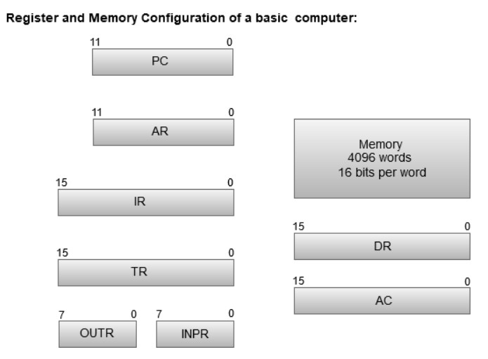

Registers are a type of computer memory used to quickly accept, store, and transfer data and instructions that
are being used immediately by the CPU. The registers used by the CPU are often termed as Processor registers.
A processor register may hold an instruction, a storage address, or any data (such as bit sequence or individual
characters).
The computer needs processor registers for manipulating data and a register for holding a memory address. The
register holding the memory location is used to calculate the address of the next instruction after the
execution of the current instruction is completed.
Following is the list of some of the most common registers used in a basic computer:
The following image shows the register and memory configuration for a basic computer.
